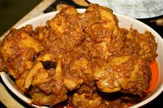
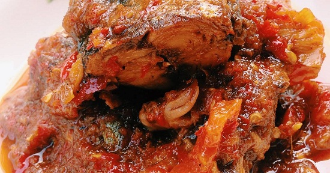
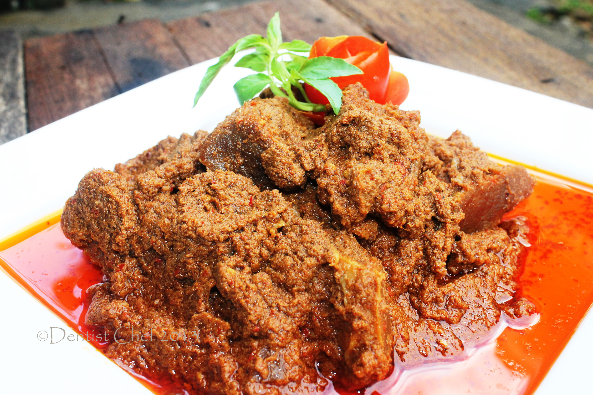
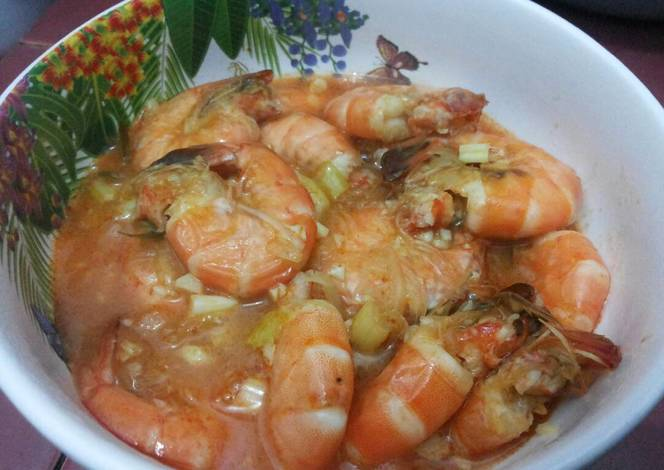

Resep Membuat Rendang Ayam

Bahan-bahan:
- 2 ekor ayam, potong ukuran sedang, cuci bersih
- 1 ruas besar lengkuas
- 1 ruas besar jahe
- 2red onion ukuran sedang
- 5 buah bawang putih
- 4 buah cabai merah
- 200 ml santan
- secukupnyaDaun jeruk, bay leaves dan serai
- 2 sdm garam
- 1 sdm kaldu ayam bubuk
Caranya
- Haluskan bumbu, kecuali dedaunan dan serai.
- Masak ayam bersama bumbu, tidak usah diberi air dan bumbu
tidak perlu ditumis.
- Tuang santan, masak dlm wajan tertutup hingga ayam matang
dan santan menyusut. Ayam siap dinikmati
Resep Ikan tongkol Balado

Bahan-bahan:
- 250 gram cue tongkol (goreng setengah kering)
- 10 buah cabai merah kriting
- 1 buahtomat merah besar
- 10 siung bawang merah
- 5 lembar daun jeruk
- secukup nya garam, minyak goreng, dan kaldu bubuk
Caranya
- Haluskan bawang merah, cabai, dan tomat.
- Tumis bumbu halus bersama daun jeruk. Tumis hingga bumbu
matang dan tidak langu.
- Tambahkan garam dan kaldu bubuk. Masukkan cue tongkol yang
telah digoreng. Aduk rata dan tes rasa. Sajikan.
Resep Rendang Daging Sapi

Bahan-bahan
- 500 gram Daging Sapi
- 400 ml Santan encer
- 400 ml Santan kental
- Bumbu Halus:
- 8 siung Bawang Merah
- 5 siung Bawang Putih
- 8 biji Cabe Merah
- 5 biji Cabe Rawit
- 2 batang Sereh (ambil putihnya)
- 2 cm Jahe
- 2 cm Kunyit
- 1 ruas Lengkuas
- 1/2 sdm Ketumbar (sangrai)
- 4 butir Kemiri (sangrai)
- Bumbu Pelengkap:
- 2 lembar Daun Salam
- lembar Daun Jeruk
- Secukupnya Garam,Gula,Penyedap
Caranya
- Tumis bumbu halus, daun salam dan daun jeruk, hingga agak
kering dan berubah warna menjadi lebih gelap.
- Masukkan daging sapi, aduk2 hingga daging berubah warna dan
mengeluarkan kaldu.
- Masukkan santan encer, garam, gula penyedap, tunggu hingga
mendidih dan kuah menyusut.
- Masukkan santal kental, tunggu hingga mendidih, kecilkan api.
Aduk sesekali agar bagian bawah tidak gosong.
- Rendang akan berubah warna menjadi gelap. Sajikan.
Resep Udang saos padang

Bahan-bahan
- 1/4 kg udang
- 3 siung bawang putih rajang halus
- 3 siungbawang merah rajang halus
- 1 buahbawang bombay kecil iris tipis
- 2 lembardaun jeruk iris tipis
- 2 ruas jahe geprek
- 1 batangdaun bawang iris serong
- secukupnya garam
- secukupnyagula pasir
- sesuai selerasaos sambal
- sesuai selerasaos tomat
- sesuai seleracabai rawit bila suka pedas
Caranya
- Bersihkan udang,buang bagian kepala.
- Tumis bawang putih,bawang merah,bombay,jahe,daun jeruk,cabai rawithingga harum
- Tambah air secukupnya,tunggu sampai mendidih kemudian
tambah saos tomat dan saos sambal sesuai selera
- Setelah agak mengental masukkan udang,masak sampai berubah
warna.tambahkan gula dan garam
- Terakhir masukkan irisan daun bawang,aduk sebentar.